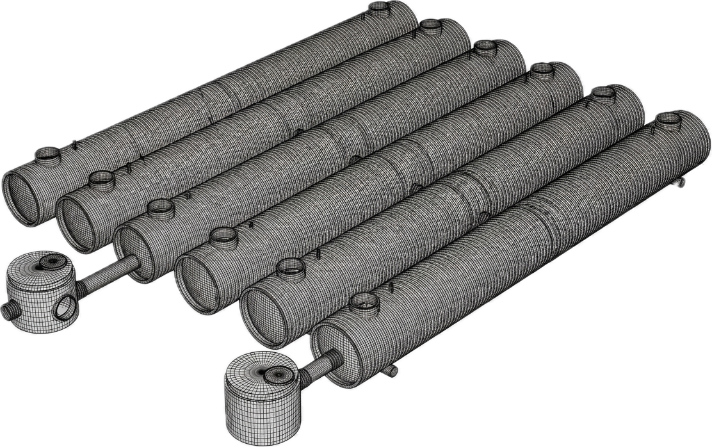

Systemy retencyjne
Magazynowanie wody opadowej i kontrola szczytowych przepływów.
Zobacz systemMapa Rozwiązań Inżynieryjnych
Nowoczesne rozwiązania retencji, infiltracji i zarządzania wodą.
Zobacz systemySekcja 02
Sekcja 03
Magazynowanie wody opadowej i kontrola szczytowych przepływów.
Zobacz systemInfiltracja wody do gruntu przy zachowaniu stabilności systemu.
Zobacz systemRozwiązania dla odwodnień punktowych i lokalnych zastoisk wody.
Zobacz systemSekcja 04
[1]
Woda opadowa zbierana jest z dachów i powierzchni utwardzonych przez wpusty oraz kolektory.
[2]
Przepływ jest buforowany w zbiornikach i modułach retencyjnych, co stabilizuje odpływ podczas nawałnic.
[3]
Po ustaniu opadu woda stopniowo infiltruje do gruntu lub jest kierowana do dalszego wykorzystania.
Sekcja 05

Techniczne rozwiązania do magazynowania i zarządzania wodą opadową w infrastrukturze przemysłowej i miejskiej.
Czytaj artykuł